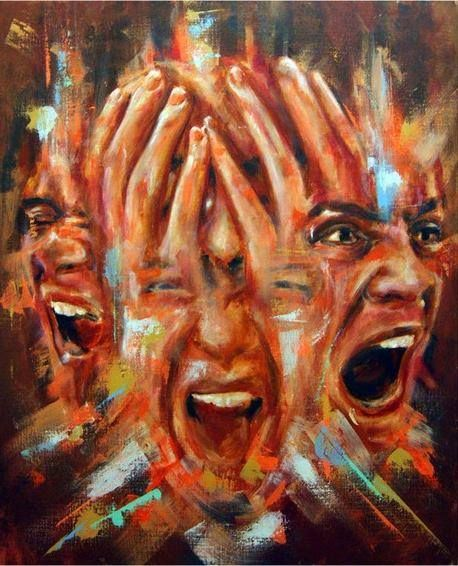
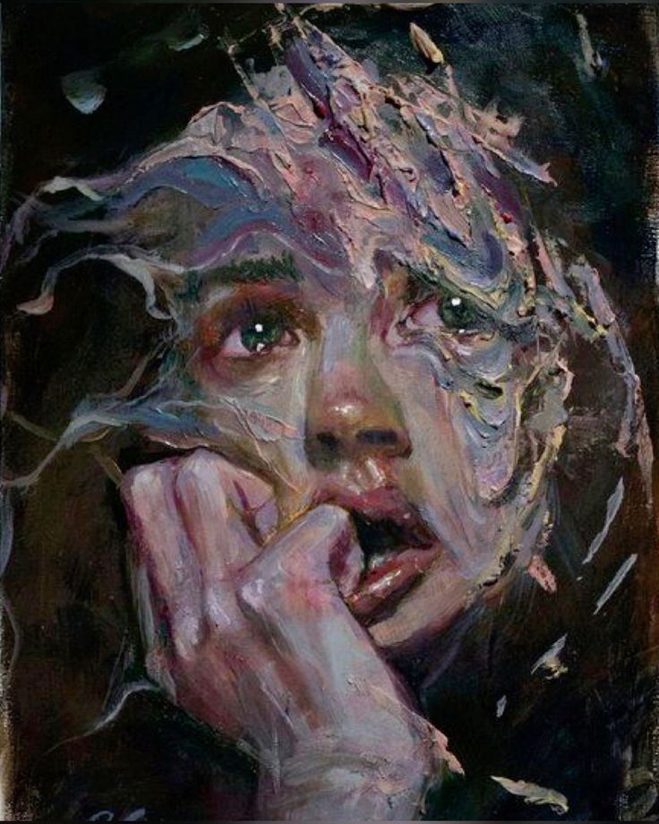
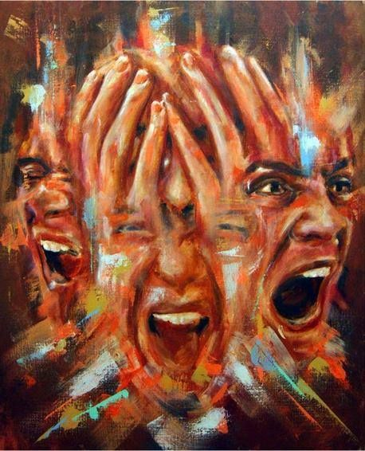
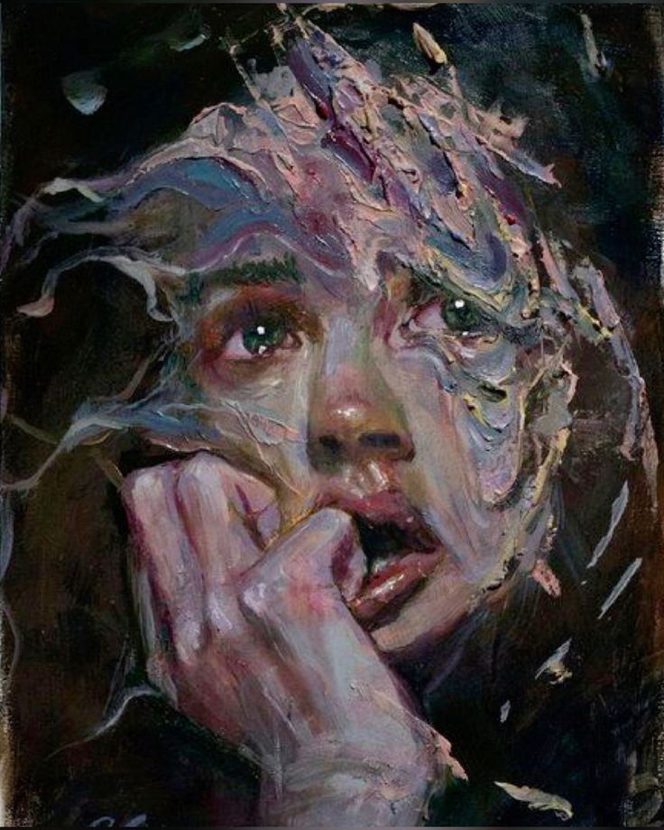

The Beauty of Art
Every piece of art is a story. It's a snapshot of a moment in time, a reflection of the artist's emotions, and a glimpse into their imagination. It's a world waiting to be discovered.
.png)
What is Art?
Art is a form of human expression that is created to evoke emotions, thoughts, or ideas. It can take many different forms, including painting, sculpture, music, literature, dance, film, and more. Art is often seen as a way to communicate ideas and feelings that may be difficult to express in words. It can also be used to challenge societal norms, to inspire, and to entertain.


Categories

Painting
Category

Sculpture
Category

Music
Category

Expressionism
Category
Sketching
Category
Collections
Paintings
Painting is the practice of applying pigment, color, or other medium to a surface (such as canvas, paper, wood, wall, or fabric) to create an image, design, or expression. It is one of the oldest and most popular forms of visual art, used by humans for thousands of years to convey ideas, tell stories, depict scenes, and express emotions.
Paintings can be made using various mediums, including oil, acrylic, watercolor, gouache, ink, and tempera. Each medium has its own characteristics, drying time, and techniques.
Sculpture
A sculpture is a three-dimensional artwork created by shaping or combining materials such as clay, stone, metal, wood, or other substances. Sculptures can be freestanding (viewable from all sides), relief (attached to a background surface), or kinetic (involving movement). This art form focuses on physical presence, volume, and space, making it one of the most tactile and interactive forms of art.

Music
Music is an art form and cultural activity that involves organized sound and silence. It is characterized by elements such as rhythm, melody, harmony, timbre, and dynamics. Music can be vocal (involving singing), instrumental (performed with instruments), or a combination of both. It exists in various forms across cultures and has been an integral part of human expression and communication throughout history.
Expressionism
Expressionism is an art movement that originated in the early 20th century, primarily in Germany. It emphasizes the expression of emotional experience rather than physical reality. Expressionist artists sought to convey feelings and subjective interpretations of the world, often using bold colors, exaggerated forms, and distorted perspectives to evoke emotional responses.
Expressionism represents a significant departure from traditional artistic techniques and norms. It encourages viewers to engage with art on an emotional level, fostering a deeper understanding of the human experience and the complexities of life. The movement has left a lasting legacy in the art world, inspiring countless artists and movements to explore the intersection of emotion and visual expression.
 




Sketching
Sketching is a drawing technique that involves creating a quick, loose representation of a subject, often used to capture ideas, concepts, or observations. It is typically characterized by its spontaneous and informal nature, allowing artists to express their thoughts and refine their visual skills without the pressure of producing a finished piece.
The Importance of Art
Art is a vital aspect of human experience, offering a powerful means of cultural expression and identity. It also promotes emotional well-being by providing an outlet for creativity and self-reflection.
Cultural Expression
Art serves as a reflection of society and its values, beliefs, and experiences. It allows cultures to express their identity, preserve traditions, and communicate historical narratives, fostering a sense of belonging and community.
Emotional and Mental Well-being
Engaging with art—whether creating or experiencing it—can have therapeutic effects. It provides an outlet for emotional expression, helps reduce stress, and can improve mental health by promoting relaxation and encouraging self-reflection.
Critical Thinking and Creativity
Art stimulates creativity and encourages individuals to think critically. It challenges viewers to interpret and analyze different perspectives, fostering innovation and problem-solving skills that are valuable in various aspects of life and work